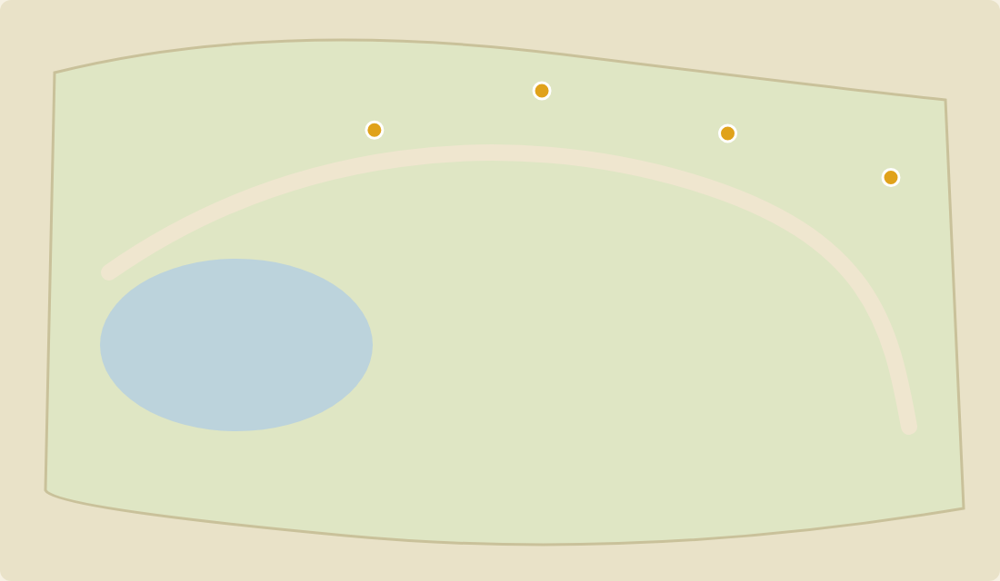

<!doctype html>
<html lang="zh-Hant">
<head>
<meta charset="utf-8">
<script>
  // 課程網址已改成 Cloudflare Pages（GitHub Pages 在台灣太慢）：舊的 github.io 網址轉到同一頁，保留 #t= 等片段
  if (location.hostname.endsWith("github.io")) {
    location.replace("https://learning-analytics-tools.pages.dev" + (location.pathname.replace(/^\/Learning-Analytics-Tools(?=\/|$)/, "") || "/") + location.search + location.hash);
  }
</script>
<meta name="robots" content="noindex">
<script src="../../../../../assets/i18n-strings.js"></script>
<script src="../../../../../assets/i18n.js"></script>
<!-- 審核用草稿，沒有任何頁面連到這裡。Copyright © 2026 JUNHAO CHEN -->

<title>01 沒寫清楚，每次不一樣</title>
<link rel="stylesheet" href="../../assets/kit/kit.css">
<link rel="stylesheet" href="../../assets/kit/codex.css">
<link rel="stylesheet" href="../common/loop.css">
<link rel="stylesheet" href="../common/v01.css">
<style>
  /* 第 2 版：同一句話問兩次的結果並排（示意）；第 2 次用手機打開要左右捲動；最後接「小安心裡的做好」 */
  .run { position: absolute; top: 130px; width: 560px; }
  .run .rh { font-size: 28px; font-weight: 700; color: #aeb8c6; }
  .run .rr { margin-top: 10px; font-size: 30px; color: #ececec; white-space: nowrap; }
  .run .rr b { color: #f0b545; }
  .run .mc { position: relative; margin-top: 16px; width: 560px; height: 348px; border-radius: 18px; overflow: hidden; background: #edf0e2; box-shadow: 0 0 0 1px #3a4556; }
  .run .chip { position: absolute; right: 14px; top: 12px; padding: 4px 14px; border-radius: 10px; background: rgba(255,255,255,.88); color: #3b3326; font-size: 24px; font-weight: 700; }
  .run .rc { margin-top: 16px; font-size: 28px; white-space: nowrap; display: flex; align-items: center; gap: 12px; color: #cfd6df; }
  .run .rc svg { width: 30px; height: 30px; fill: none; stroke: currentColor; stroke-width: 3; stroke-linecap: round; stroke-linejoin: round; }
  .run .rc.ng { color: #f0b545; }
  .phL { position: absolute; font-size: 26px; font-weight: 700; color: #cfd6df; white-space: nowrap; }
  .phL.ng { color: #f0b545; }
  #mind { width: 520px; }
  #mind .ln::before { content: "□"; color: #8a7a5a; }
</style>
</head>
<body>
<div id="viewport"><div id="stage"></div></div>
<script src="../../assets/kit/kit.js"></script>
<script src="../../src/fox2.js"></script>
<script src="../common/spots.js"></script>
<script src="../common/loop.js"></script>
<script src="../common/v01.js"></script>
<script>
(function () {
  const C = K.clamp, E = K.ease, $ = L.$;
  const OK = '<svg viewBox="0 0 32 32"><path d="M6 17 L13 24 L27 8"/></svg>', NG = '<svg viewBox="0 0 32 32"><path d="M8 8 L24 24 M24 8 L8 24"/></svg>';
  const run = (id, x, head, reply, line, cls) => `<div class="run" id="${id}" style="left:${x}px"><div class="rh">${head}</div><div class="rr">${reply}</div>` +
    `<div class="mc" id="${id}m"></div><div class="rc ${cls}" id="${id}c">${cls === "ng" ? NG : OK}<span>${line}</span></div></div>`;
  L.mount({ boards: run("r1", 70, "第 1 次（4:10 PM）", "做好了！<b>12 個景點</b>都在地圖上。", "有檢查手機寬度 390 px", "ok") +
    run("r2", 700, "第 2 次（4:32 PM）", "做好了！地圖上有 <b>4 個景點</b>。", "沒有檢查手機", "ng") +
    `<div class="phone" id="ph1"></div><div class="phone" id="ph2"></div><div class="phL" id="phL1">第 1 次：剛好</div><div class="phL ng" id="phL2">第 2 次：要左右捲動</div>` +
    `<div class="sheet" id="mind" style="left:1300px;top:150px">
      <div class="hd"><span class="ttl" style="font-size:34px">小安心裡的「做好」</span></div><div class="sub">沒有寫下來</div>
      <div class="ln">12 個景點都要在</div><div class="ln">手機上也能看</div><div class="ln">標記點得到</div></div>` });
  ["zMac", "zSrv", "app", "folder", "net", "netL", "srv", "stack", "stackN"].forEach((id) => K.vis($(id), 0));
  const D = 20;
  // 第 2 版：兩支手機並排（第 1 次剛好、第 2 次要左右捲動），再接「小安心裡的做好」
  const R1 = 0.3, R2 = 0.6, PIN1 = 0.8, PIN2 = 1.1, PD = 0.1, CHK1 = 3.0, CHK2 = 3.4, PH = 5.0, PAN0 = 6.6, PAN1 = 9.6, PHOUT = 11.4, MIND = 11.6, FOX = 15.0;
  const PW = 270, P1X = 1300, P2X = 1600, PY = 176;
  const CAPS = [
    [0.4, 5.6, "同一句話，每次做法可能不一樣", "第 1 次：12 個點、有檢查手機；第 2 次：4 個點、沒檢查手機"],
    [6.0, 9.6, "用手機打開：第 1 次剛好，第 2 次要左右捲動", "第 2 次沒檢查手機"],
    [10.0, 13.4, "沒寫清楚的地方，它每次可能猜得不一樣", "AI 每次的回答不一定一樣"],
    [13.8, 16.6, "Codex 的「做好了」，是它自己判斷的", ""],
    [17.0, D - 0.3, "它不知道你心裡的「做好」長什麼樣", "所以要寫下來"],
  ];
  function render(t) {
    V.dip(t, D);
    L.cam(t, [[0, ...L.WIDE]]);
    L.sec(t, "01", "沒寫清楚，每次不一樣");
    // 兩次的結果：標記一個一個出現，右上角計數
    [["r1", R1, PIN1, 12, CHK1], ["r2", R2, PIN2, 4, CHK2]].forEach(([id, a, p0, N, ck]) => {
      const n = Math.max(0, Math.min(N, Math.floor((t - p0) / PD) + 1));
      // 第 2 次的地圖：和手機裡同一頁（第一版的畫法，source/data/make_index_run2.py），截圖上的 4 個標記已經畫好，只跳計數
      const m = $(id + "m"), h = (id === "r2" ? `` : V.map({ w: 560, h: 348, n })) + `<div class="chip">${n} 個</div>`;
      if (m.__h !== h) { m.innerHTML = h; m.__h = h; }
      K.vis($(id), C((t - a) / 0.4));
      $(id).style.transform = `translateY(${((1 - K.spring(t - a, 14, 0.85)) * 20).toFixed(1)}px)`;
      K.vis($(id + "c"), C((t - ck) / 0.35));
    });
    // 兩支手機：第 1 次是 Codex 改好的版本（手機寬度剛好），第 2 次寬度寫死 1100 px、要左右捲動（示意的頁面，source/data/make_index_run2.py）
    const pan = t < PAN0 ? 0 : 300 * Math.sin(Math.PI * E((t - PAN0) / (PAN1 - PAN0)));
    V.screen($("ph1"), { src: "v2-390.png", w: PW });
    V.screen($("ph2"), { src: "run2-390-full.png", full: true, sx: pan, w: PW });
    const po = C((t - PH) / 0.4) * (1 - C((t - PHOUT) / 0.4)), py = PY + (1 - E(C((t - PH) / 0.4))) * 30;
    [["ph1", P1X, "phL1"], ["ph2", P2X, "phL2"]].forEach(([id, x, lb]) => {
      $(id).style.left = x + "px"; $(id).style.top = py + "px"; K.vis($(id), po);
      $(lb).style.left = x + "px"; $(lb).style.top = (PY - 50) + "px"; K.vis($(lb), C((t - PH - 0.4) / 0.3) * (1 - C((t - PHOUT) / 0.4)));
    });
    // 小安心裡的「做好」：一張沒寫出來的紙條
    K.vis($("mind"), C((t - MIND) / 0.4));
    $("mind").style.transform = `translateY(${((1 - K.spring(t - MIND, 14, 0.85)) * 20).toFixed(1)}px) rotate(0.6deg)`;
    $("mind").querySelectorAll(".ln").forEach((l, i) => { l.style.opacity = C((t - (MIND + 0.6 + i * 0.5)) / 0.3); });
    L.fox("foxO", 1560, 800, 0.82, "front", { alpha: C((t - FOX) / 0.5), look: -0.4, expr: "curious", blink: Math.floor(t * 10) % 39 === 0 });
    L.illus(t, [[R1, D, "示意：同一句話，每次的做法可能不同"]]);
    L.caps(t, CAPS);
  }
  L.start("01 沒寫清楚，每次不一樣", D, render);
})();
</script>
</body>
</html>
